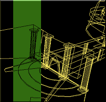

|
by SFX
|
 |
| We want you to contribute to this community with your own worlds, VRML is not that complex. Yes it is a programing language (Virtual Reality Programing Language) but many 3D graphics program can export your creation into a VRML format that anyone can access on the Internet. |
This is not a course or tutorial on the subject of VRML but rather a short introduction to the best tools available and the location of tutorials on the Internet so let’s get started! TUTORIALS: Want to learn the programing language..if so, check those tutorials. As mentioned before you don’t need to learn the language to create VRML worlds but it may help to add features to your worlds. If the idea of learning programing makes you, well ..you know..go directly to the tools but I would advice you to get some familiarity with the stuff... A whole site VRML related with links to more tutorials, news..awesome place!
TOOLS Here are some links to some of the best tools on the Internet to create VRML content: |
HOME SPACE DESIGNER Free evaluation program for a full month! |
Description from their web site: Perfect for an absolute beginner to virtual spaces. |
COSMO WORLDS Free evaluation program should be available |
Description from their web site: Cosmo Worlds is the comprehensive interactive 3D Web authoring and publishing system. It is native VRML 2.0, so you optimize your creations for Web impact every step of the way. |
VRCreator Free download..limited edition. You can create small worlds |
Description from their web site: PLATINUM VRCreator enables users to quickly and easily create 3D VRML 2.0 content for the World Wide Web, corporate intranets, and standalone computers. Developers can also use VRML technology as an embedded component within traditional client/server applications. |
OTHER PLACES FOR VRML SOFTWARES: |
WORLD VISIONS Free download for trial V-REALM BUILDER Free demo |
AVATARS |
Avatars are representation of yourself in a 3D world. We have a collection of avatars available for you but you can also create your own avatar. Check out the following wonderful program: |
AVATARMAKER Free demo |
This should give you enough for a week..next week, the article will be related to creating VRML worlds for multi-user applications..yes..there are things to know :) |